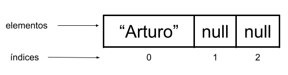

Inicializar y recorrer un Array
Inicializar un array
Dado el siguiente array de caracteres (tipo String),
String[] nombres = new String[3];Para insertar el valor “Arturo” en la posición 0, se hace de la siguiente forma:
nombres[0] = "Arturo";A continuación se muestra una representación visual del array después de insertar el valor “Arturo” en el la posición 0:

Observa como los índices 1 y 2 contienen null, esto es porque Java otorga esos valores cuando se instancia el array. Por lo tanto, si no inicializamos los elementos de un array, se almacenará el valor por defecto según el tipo de dato:
También se pueden declarar, instanciar, y asignar elementos a los arrays en una sola línea. Por ejemplo:
int[] numeros = {2,4,6,8};observa cómo los elementos con los que se está inicializando el array van entre llaves {2,4,6,8}. Además, en este caso no se debe utilizar la palabra reservada new, ni corchetes junto al tamaño.
Excepciones y errores
- Dado que el tipo de dato del array es String, sólo se pueden insertar elementos de tipo String. Si se intenta insertar un elemento de otro tipo, Java devuelve un error.
Por ejemplo, al intentar insertar un número en el array nombres,
nombres[1] = 4;se obtiene un error similar al siguiente,
Y en concreto, IntelliJ IDEA nos lo notifica directamente mediante el intérprete:
- Por otro lado, si se intenta insertar un elemento en una posición que no existe en el array, Java devolverá una excepción llamada ArrayIndexOutOfBoundsException. Este error puede que lo hayas visto antes, ya que trabajando con cadenas de caracteres puede ser que hayas utilizado alguna función que se comporte igual (como charAt(posicion)).
Por ejemplo, se sabe que el índice 3 no está disponible en el array nombres porque la numeración empieza en 0 y es de tamaño 3, por lo tanto, los índices disponibles son 0, 1, y 2. Si se intenta insertar un elemento en el índice 3:
nombres[3] = "José";se obtiene la siguiente excepción,
Recorrer un array
Para recorrer los elementos de un array podemos hacerlo mediante un bucle for. Al igual que con la clase String, también podremos utilizar la propiedad length para obtener la cantidad de elementos que forman dicho array:
int[] notas = new int[5];
for(int i = 0; i < notas.length; i++) {
notas[i] = i*2;
} //los valores almacenados en el Array serán 0,2,4,6,8OJO con el signo de la condición en el bucle for. Si elegimos i <=, debemos repetir el bucle hasta notas.length - 1.
EJEMPLOS
- Si nos ceñimos al programa del punto anterior, en caso de querer imprimir directamente los valores del array sin haberlos inicializado, obtendríamos valores nulos:
int[] notas = new int[5];
for(int i = 0; i < notas.length; i++) {
System.out.print(notas[i]);
} //se muestra 00000- Podemos inicializar manualmente los valores que tendrá un array, poniéndolos entre llaves y separándolos por comas:
int[] notas = {6,7,8,1,10,5}; //Array de 6 enteros
for(int i = 0; i < notas.length; i++) {
System.out.print(notas[i]);
} // 6781105String[] nombres = {"Pep", "Tom", "Kal"}; //Array de 3 Strings
for(int i = 0; i < nombres .length; i++) {
System.out.print("[" + nombres[i] +"]");
} // [Pep][Tom][Kal]